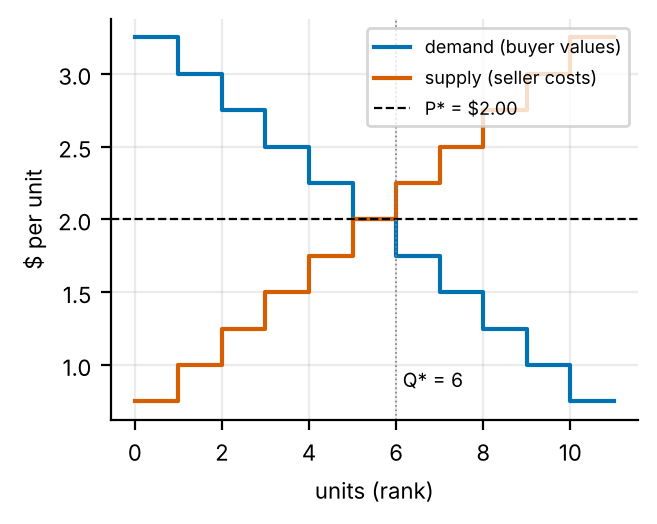
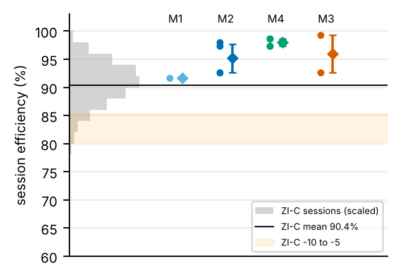
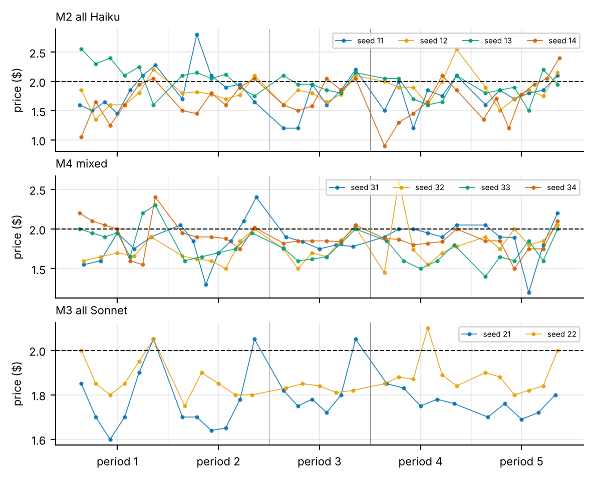
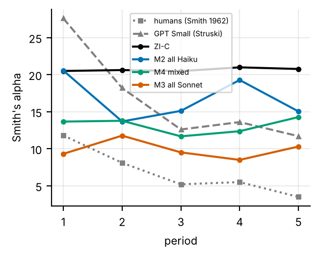
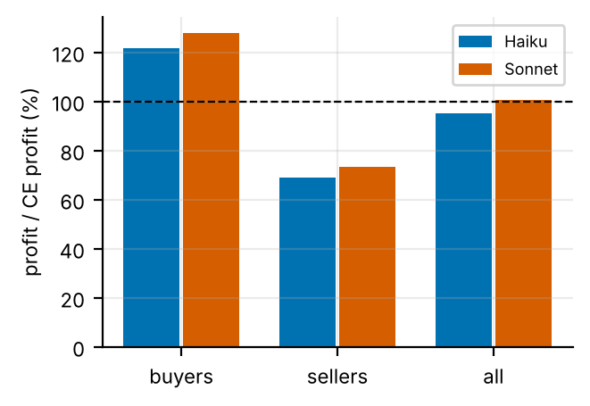

Market Town: LLM traders in a double auction against the competitive equilibrium
AutoAgentNetwork, market-town pilot (session 5, 2026-10-19). Branch market_town. Every number below is filled in by python -m analysis.market from results/; the plan and preregistration are in research/market/plan.md.
Question. Do Claude traders in a continuous double auction allocate goods as efficiently as the competitive equilibrium predicts? Do they do better than zero-intelligence traders who only respect their budget? And when junior (Haiku 5.5) and senior (Sonnet 5.5) traders meet in one market, who captures the surplus?
Design.
Smith's (1962) Test 1 schedule, as used by Struski et al. (arXiv 2609.02580): 11 buyers and 11 sellers, values and costs from $0.75 to $3.25. The competitive price P* is $2.00, the competitive quantity Q* is 6 units, and the maximum surplus is $7.50 per period.
Five periods of 8 polling rounds each, and a best-bid / best-ask book with an enforced budget rule.
Conditions: M1 (smoke) and M2, all Haiku, M2 with 4 sessions; M4, Sonnet on half of each side, 4 sessions; M3, all Sonnet, 2 sessions. The baseline is 1,000 sessions of ZI-C traders on the same protocol.
ZI-C traders reach 90.36% on the same protocol, so the preregistered "sane" rule (at least 85.4%) fires. The predicted 75-95% range is missed on the high side.
Prices do not converge to P*.
The M2 period-5 mean is $1.82, below the predicted $1.85-2.15. 47 of 50 LLM periods price below $2.00. Buyers earn 122.2% of their CE profit and sellers 68.16%.
Caveat: the rules text gives "for example 1.85" as a price format, and $1.85 is the most common trade price in M4 and M3. The prompt may anchor prices.
Smith's alpha falls from 20.56 to 15.04 over the five periods, as predicted.
MT3: no exploitation found (M4, Sonnet on half of each side, 4 sessions).
Sonnet earns 5.44 points more of its competitive-equilibrium profit than Haiku. That is inside the placebo range from all-Haiku sessions (largest 6.81), and below both the predicted 10 points and the 20-point bar.
The small edge comes mostly from price, not from trading more.
MT2: not shown (M3, all Sonnet, 2 sessions against M2's 4).
Efficiency differs from M2 by 0.833 points, the opposite sign to the prediction. The pooled t-interval is -7.45 to 9.11, so a 7-point drop is not ruled out either.
Sonnet markets make fewer trades only because they make fewer extramarginal trades. Intramarginal trades are 5.4 against 5.3 per period.
The waiting measures rest on too few turns to read.
Spend: $2.6 for the market (11 paid sessions). Lifetime spend is $9.31 of the $20 pilot cap.
1. Why a market
The pilot (reports/pilot/) asked how to spend agent calls inside one team. Its premise did not hold on fresh items: one Sonnet call matched the 19-call Haiku team. A second way to organize agents is through prices: agents trade, and the market coordinates them. That idea is only worth pursuing if LLM traders produce a sane market. Such a market:
allocates units to the traders who value them most;
converges toward the competitive price;
does at least as well as random traders who only respect their budget, since that baseline already reaches about 90% efficiency here.
The mixed market also asks a question for an agent company. When seniors and juniors trade against each other, does the senior capture the junior's surplus?
Supply and demand cross at P* = $2.00 and Q* = 6. The sixth pair (value $2.00, cost $2.00) trades at zero surplus.
Ranks 7-11 on each side are extramarginal: at P* they should not trade, and every trade they make displaces surplus.

Figure (a). Induced demand (buyer values) and supply (seller costs). They cross at P* = $2.00 and Q* = 6 (Smith 1962, Test 1; Struski et al. 2026).
Market rules.
Every period, each trader has one unit to buy or sell.
Each period has R = 8 polling rounds. In each round, every trader who has not yet traded acts once, in a seeded random order.
The book holds only the best bid and the best ask. A new bid must beat the best bid, and a new ask must undercut the best ask.
A crossing quote, or ACCEPT, trades at the standing quote's price, and both quotes then clear.
The budget rule is enforced: a buyer cannot bid above its value and a seller cannot ask below its cost. Such orders are rejected and count as a PASS.
LLM traders.
Each trader reads the market rules (identical for all traders, and cached as a shared prompt prefix), then its own situation:
its value or cost;
the period and round;
the best bid and ask;
the last 10 trade prices this period;
the mean price of earlier periods;
its profit so far.
It replies with one line of reasoning and an action: BID, ASK, ACCEPT or PASS.
Models: Haiku 5.5 and Sonnet 5.5, thinking off, temperature 1, at most 200 output tokens.
Each session has its own seed, used as the replicate number of every call, so no session reuses another's cached calls.
ZI-C baseline (Gode and Sunder 1993). Each turn, a buyer bids uniformly between $0.01 and its value, and a seller asks uniformly between its cost and $4.00. It never learns. 1,000 sessions run on the same engine.
Metrics.
Allocative efficiency: realized surplus over $7.50 per period.
Smith's alpha, per period: 100 × the RMS deviation of trade prices from P*, divided by P*.
Extramarginal trades.
Rejected-order and unparsed rates.
Profit as a share of the profit each trader would earn at P* (CE profit).
Waiting:
the late PASS share: PASS turns by traders with a positive CE profit in rounds 6-8;
the final spread.
Intervals: 95% intervals resample sessions (10,000 draws). With 2-4 sessions per condition they are crude, and each is shown with its n.
3. The ZI-C baseline
condition
sessions
efficiency %
session CI lo
session CI hi
t CI lo
t CI hi
trades / period
mean price
period-5 price
alpha p1
alpha p5
ZI-C
1000
90.36
90.12
90.6
90.12
90.6
5.047
2.001
1.993
20.5
20.77
M1 Haiku smoke
1
91.67
91.67
91.67
6.5
1.775
1.75
25.86
29.14
M2 all Haiku
4
95.17
92.67
97.67
90.55
99.78
6.1
1.823
1.817
20.56
15.04
M4 mixed
4
98
97.33
98.67
96.78
99.22
5.9
1.818
1.804
13.67
14.28
M3 all Sonnet
2
96
92.67
99.33
5.6
1.825
1.804
9.312
10.3
On this protocol, ZI-C reaches 90.36% mean session efficiency (1,000 sessions). Its alpha is about 20.6 in every period, because ZI-C has no memory. The preregistered decision lines are therefore:
at least 85.4% for "sane";
below 80.4% for "worse than random".
4. Results
4.1 M1: the smoke test
One all-Haiku session of 2 periods. Every M1 prediction was met:
unparsed 0% (prediction under 5%);
no truncation;
rejected orders 1.9% (prediction under 10%);
6 and 7 trades per period (prediction at least 3).
The shared rules prefix (631 tokens) was written to the cache once and read on every later call, so a Haiku turn cost about $0.00007. M1 is not pooled with M2.
4.2 M2: all-Haiku markets
Efficiency.
Four sessions reached 95.17% mean efficiency (92.7, 97.3, 98.0 and 92.7%). Every session beat the ZI-C mean of 90.36%. The lowest session (92.7%) is above ZI-C's median of 90.7%.
About 0.8 extramarginal trades happen per period, against 0.50 for ZI-C. LLM traders almost always trade the right units, but too many of them: 6.1 trades per period against ZI-C's 5.05. The sixth pair (zero surplus) often trades as well.
Prices.
Prices sit below P* in almost every period: 17 of 20 period means are below $2.00. ZI-C, on the same engine, prices at 1.99-2.01.
Buyers earn 122.2% of their CE profit, sellers 68.16%.
Possible prompt anchor. The shared rules say "Prices are in dollars and cents, for example 1.85". In M2, 9.8% of trades are at exactly $1.85, tied for the most common price. In M4 and M3, $1.85 is the most common trade price. So the below-P* bias and the buyer advantage may come partly from the prompt rather than from the traders' reasoning (audit 37).
Smith's alpha falls from 20.56 (period 1) to 15.04 (period 5) in every session. That is learning across periods, which ZI-C (alpha 20.5-21.0, flat) cannot do.
For comparison, GPT Small in Struski et al. goes from 27.6 to 11.7, and Smith's human subjects from 11.8 to 3.5.
Reply format. 6.45% of orders are rejected, mostly sellers asking below cost in late periods. 0.15% of replies are unparsed.
4.3 M4: Sonnet and Haiku in one market
Design. Sonnet held the odd ranks of both sides in sessions 31 and 33, and the even ranks in sessions 32 and 34. Every rank was senior twice and junior twice, so the two models' competitive-equilibrium profit pools are equal ($75 each).
The gap.
Sonnet earned 5.44 points more of that pool than Haiku: buyers 6.27, sellers 4.61.
The rank-pair interval is 0.32 to 11.48. It is descriptive only, because it ignores session-to-session variation.
Labeling M2's all-Haiku sessions the same way gives placebo gaps of up to 6.81 points. So the gap is within label noise.
The preregistered reading is "no exploitation found".
Where the edge comes from.
Who trades: Sonnet's intramarginal seats traded in 1 of their slots and Haiku's in 0.99.
At what price: in the 58 Sonnet-Haiku trades, Sonnet's price edge over P* averaged $0.027.
On the same seats, intramarginal ranks earned $3.12 per session as Sonnet, $2.92 as Haiku in M4, and $2.9 in all-Haiku M2.
Efficiency. Mixed markets reached 98% efficiency (t-interval 96.78-99.22), against M2's 95.17% (90.55-99.78). The point estimate misses the prediction that mixed markets would not beat M2, but the intervals overlap, and no ranking is claimed.
Reply format. Sonnet's replies were clean: 0 unparsed, 0 truncated and 0 rejected orders in 1,037 turns. Each Sonnet turn cost about $0.0011, with the prefix cached.
4.4 M3: all-Sonnet markets
Results (2 sessions, against M2's 4):
5.6 trades per period against M2's 6.1. The difference is all extramarginal trades (0.2 against 0.8 per period); intramarginal trades are 5.4 against 5.3. So "fewer trades" here is Sonnet avoiding bad trades, not Sonnet waiting.
96% efficiency, 0.833 points from M2. The session-resampled interval is -4 to 5.5, the pooled t-interval -7.45 to 9.11. A 7-point drop is not ruled out, and neither is a gain. No efficiency ranking between the conditions is claimed.
The waiting measures are too thin to read:
the late PASS share (0.375 against 0.167) rests on 12 M3 turns in 4 of 10 periods;
the final spread exists in only 7 of 10 M3 periods, and is narrower than M2's ($0.513 against $0.697).
Verdict. The preregistered "holds" needs at least a 7-point drop in efficiency and fewer trades. So MT2 is not shown at n = 2 against 4. It is not refuted either.
Other observations.
Sonnet markets have the lowest price dispersion of the LLM conditions: alpha 9.31 in period 1 and 10.3 in period 5.
Their prices still sit below P*, and $1.85 is their most common trade price (12.5% of trades).
One period of session 21 fell to 66.7%. An extramarginal buyer took a $0.03 profit early in the last period, and two high-value buyers, anchored on the earlier mean price, never met a seller again. It is a single-period event.

Figure (c). Session efficiency by condition (dots: sessions; diamonds: mean with 95% session-resampled interval) against the ZI-C distribution (grey histogram; line: mean; band: ZI-C - 10 to - 5 points).

Figure (b). Trade prices in each period for every session of M2, M4 and M3, against P* = $2.00 (dashed).

Figure (e). Smith's alpha by period: mean over sessions per condition; humans (Smith 1962 Test 1) and GPT Small (Struski et al. 2026) for reference.

Figure (d). M4: profit as a share of CE profit for Sonnet and Haiku traders, by side (100% = what trading at P* would give).
5. Decisions (preregistered)
run
prediction or rule
value
met
M1
unparsed under 5% of turns
0
True
M1
no reply truncated
0
True
M1
rejected orders under 10%
1.942
True
M1
at least 3 trades in each period
6
True
M2
mean efficiency 75-95%
95.17
False
M2
period-5 mean price within $0.15 of P*
1.817
False
M2
alpha lower in period 5 than period 1
-5.521
True
M2
decision rule: sane (>= ZI-C - 5)
95.17
M4
Sonnet minus Haiku profit share >= 10 points
5.44
False
M4
mixed efficiency not above M2
98
False
M4
both models at most 5% unparsed and truncated
True
M4
exploitation rule (gap >= 20 and above every placebo gap): no exploitation found
M2: "sane" fired (MT1). Claude traders allocate units in a double auction better than budget-constrained random traders, and close to the competitive allocation. Prices, however, do not converge to P*. Under the preregistered rule, a firm-vs-market follow-up is worth proposing to Kevin; it is not started without him. It would first need two things:
the rules' price example replaced by a neutral one;
enough sessions to detect a difference of about 7 points.
M4: no exploitation found (MT3). Sonnet's edge over Haiku in a shared market is about 5 points of competitive-equilibrium profit. That is inside the label noise measured on all-Haiku sessions, and it comes mostly from price, not from crowding Haiku out of trades. Four sessions set no design rule. No larger M4 is proposed.
M3: not shown (MT2). In all-Sonnet markets the larger model shows no efficiency penalty at this n, but 2 sessions against 4 cannot rule one out. The trade count difference is Sonnet avoiding extramarginal trades. The waiting measures are too thin to read. This neither refutes nor reproduces Struski et al.'s GPT Large result.
What this does not show
Small n. 4, 4 and 2 sessions.
Session-resampled intervals are too narrow at this size, so the t-intervals are shown next to them.
No t-interval is shown for M3 alone (n = 2).
Every "not shown" here is a statement at this n.
A possible prompt anchor. The rules give "1.85" as the example price format. $1.85 is the most common trade price in M4 and M3, and 47 of 50 LLM periods price below P*, while ZI-C on the same engine prices at P*. The below-P* bias and the buyer advantage may be partly an artifact of the prompt. A rerun with a neutral example would separate the two; it is free to write and was not preregistered.
The R = 8 limit. Each trader gets at most 8 turns per period, against about 13.6 in Struski's design. That favours traders who act early and may hide waiting that a longer period would expose.
Comparability. The budget rule is enforced here (Struski only states it). Traders see only the last 10 prices and the earlier period means, not the full order history. So these numbers are new measurements on Claude models, not replications of Struski et al.
Process
Reviews. The plan was preregistered before any paid call. The auditor reviewed every paid run (audits 26-37) and recomputed every decision from the raw data. Three adjustments came from audits:
format stops checked per model;
a reply cut off by the token cap counts as unparsed (one Haiku reply cut at "ASK 2." had been read as $2.00 and rejected);
analysis fixes.
A restart. The container restarted once during M2 session 14. The paid calls survived in the working tree, were committed first, and the rerun replayed them from the cache, so nothing was billed twice.
Spend. Actual spend ran at about 0.2x the governor's worst case throughout.